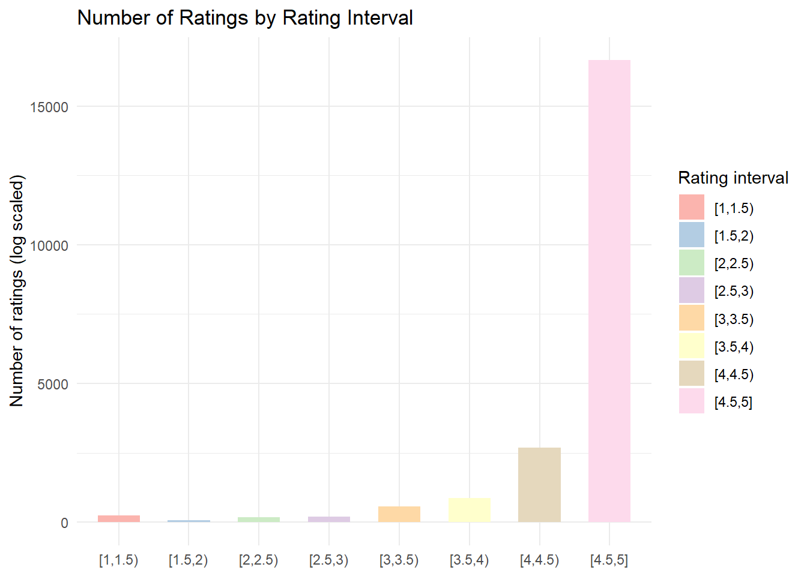
What Drives Success in the Shopify App Store?
1 Introduction
1.1 Business Problem
The Shopify App Store is a competitive SaaS marketplace where thousands of applications compete for visibility, adoption, and user ratings.
This project aims to identify the key drivers of app success, focusing on pricing strategy, competition intensity, feature richness, and developer engagement.
1.2 Research Questions
To get to the core of the business problem, I break it down into the following four research questions:
- Does pricing strategy influence ratings and review count?
- Do freemium apps outperform paid-only apps?
- Does developer responsiveness affect user satisfaction?
- How does category competition influence performance?
2 Data Description
The Shopify App Store dataset contains information about apps and reviews derived from scraping the Shopify App Store. Scraped data are automatically stored without any further control. Therefore, my first step was to clean data and perform feature engineering.
In MySQL I obtained a cleaned final database by exploring every dataset and ultimately joining the app data with the corresponding pricing plans, key benefits, and reviews data. I found the average pricing and rating per app in the original app dataset to be inconsistent with the more detailed pricing plans and reviews table. So I recomputed the averages based on the more accurate tables before merging.
A major challenge was presented by the category table: depite having normalized the text, most category titles were unique in the choice of words providing no additional information. The solution was to create macrocategories but, due to the large number of data, doing so in SQL was not feasable. So I performed a Text Clustering using NLP techniques in Python to obtained a new data set named clustered_categories.
Joining every table to the app data containing demographic information, I obtained an aggraged dataset with:
- Number of apps: 11,951
- Number of categories: 95
- Number of developers: 7,697
- Key variables constructed:
- avgerage reply time
- response rate
- days since last update
- category competition
- number of benefits
- success score (weighted ratings)
- has free trial
- has free plan
3 Marketplace Overview
3.1 Distribution of ratings
Figure 1 shows the number of reviews and the average rating per app. Looking at the left side panel, network effect emerges as reviews are concentrated in an handful of apps. In other words, more popular apps attrack more users making those app even more popular. The right side panel shows that ratings are heavily skewed to the right.
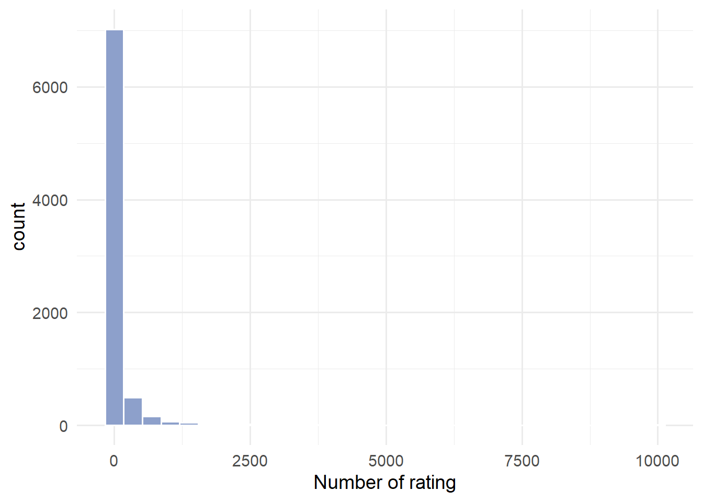
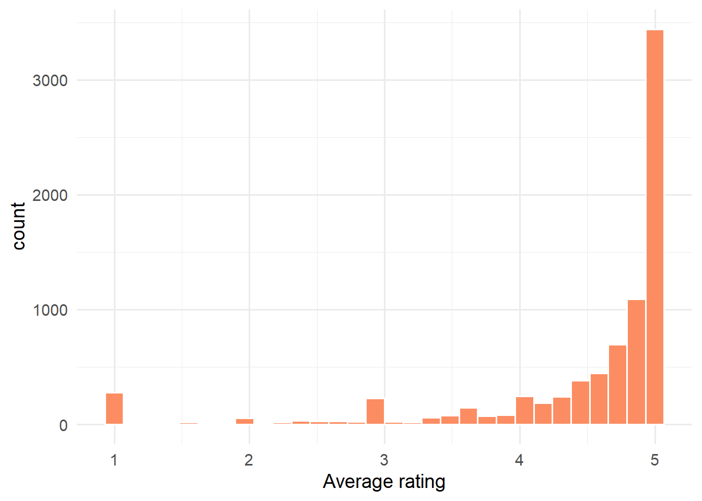
It’s also worth noticing, as shown in Figure 2, that more popular apps have also a higher average rating.
Intrestly, developers’ response rate and replying time are not correlated with the average rating of their apps. Instead, frequent software updates are essential to keep good rating as shown in Figure 3.
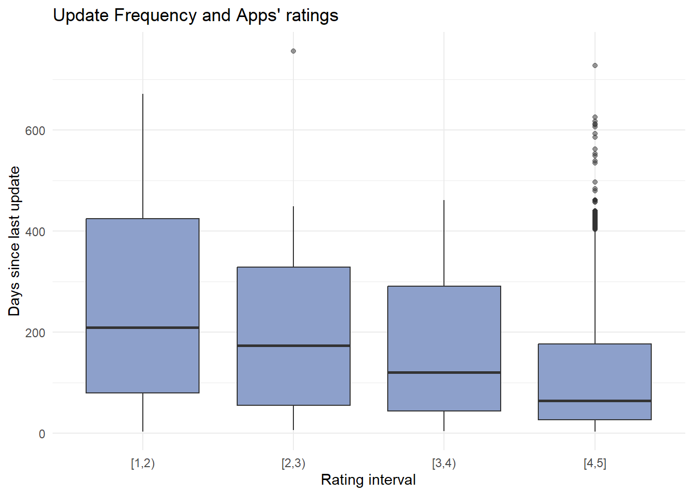
3.2 Category concentration
Market competition is simply the number of apps in a given category. As the following histogram shows, the number of competitors per category in not uniformally distributed. The reason is not only that some markets are more appealing than others attracting more developers, but also that we synthetically derived the macrocategories from the NLP analysis. Therefore every conclusion on market competition should be taken with caution.
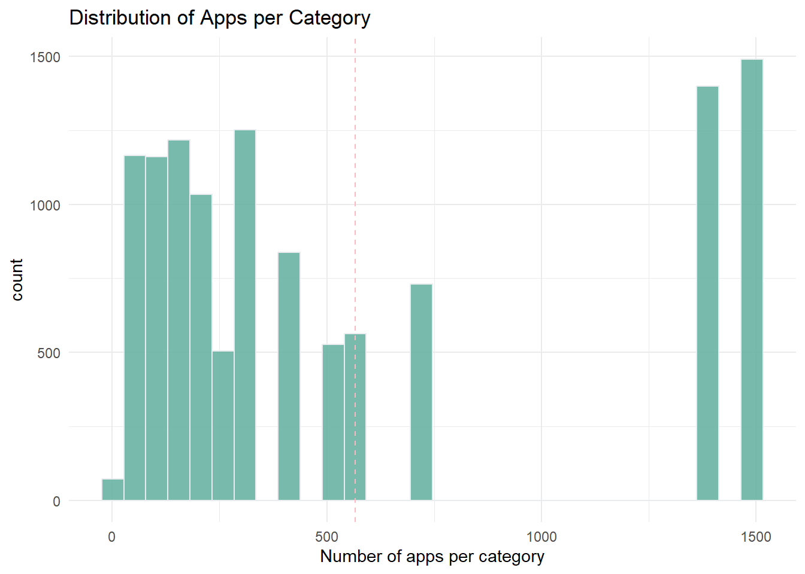
Starting from this distribution, I create four categories of market concentration:
- low competition
- medium competition
- high competition
- intense competition
A remarkable finding, presented in the following figure, is that the mean success score for apps in intense competitive categories is the lowest.
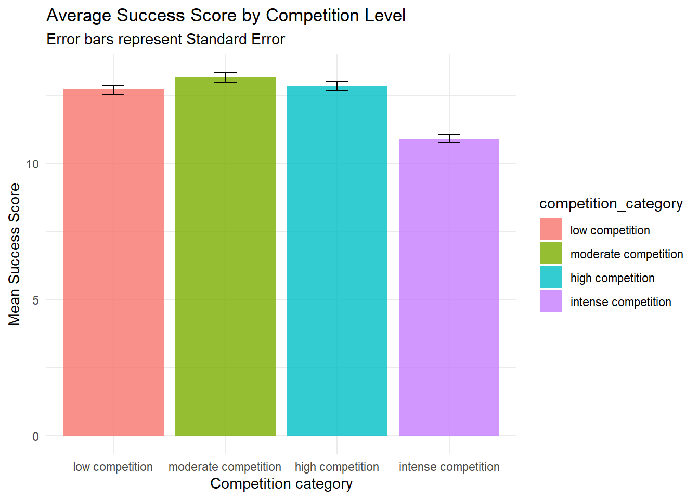
It’s worth noticing that there are only two macrocategory populating the intense market competition group and therefore the result may reflect category-specific characteristics rather than competition-specific ones.
3.3 Distribution of prices
The distribution of prices reflects the variaity of pricing strategies. While the bulk of the distribution is under the $60 a month threshold, there are outliers heavily influencing the mean of the distribution. Considering free apps, the meadian app price is $10 while the mean is $94.44. Among subscription apps only, the median price is higher, $19.99, while the mean price is lower at $90.52.
Among subscription only apps, the median and average monthly prices are positively correlated with the number of plans offered as described int the following table:
| Number of plans | Median Price | Average Price |
|---|---|---|
| 1 | $8 | $30 |
| 2 | $9.99 | $62.1 |
| 3 | $29 | $133 |
| 4 | $30 | $92.9 |
4 Pricing Strategy Analysis
Apps in the marketplace are distributed as it follows:
| Price category | Number of apps |
|---|---|
| Free apps | 1,974 |
| One-time apps | 78 |
| Subscription apps | 7,627 |
Among Subscription apps, apps with 1 and 4 plans are the most popular pricing options as indicated by the figure below:
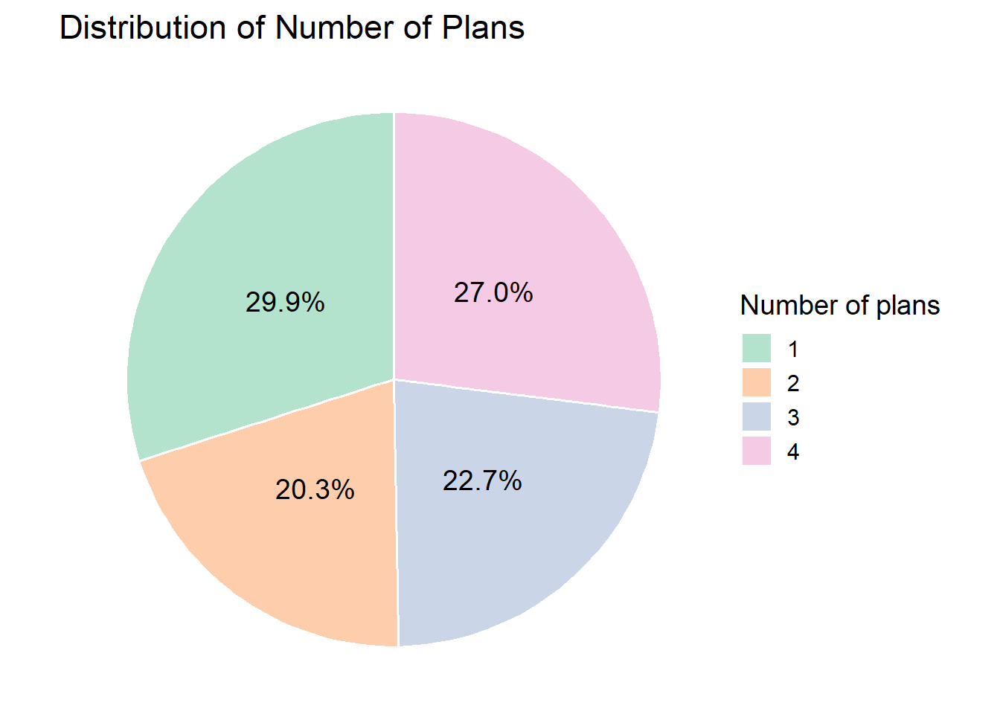
It’s also worth noticing that among apps with subscriptions, 46% offer a free base plan and are thus freemium.
Note
Note that freemium apps are a sub category of subscription apps.
One-time apps perfomr the worst when comparing average rating acrooss groups followed by free apps, while freemium apps have the highest liking, although the differences are not large. Instead, the gap is much more significant when looking at the success score. Freemium apps perfom the best showing a competitive advantage among the subscription group. On the other hand, free and one-time apps score the least.
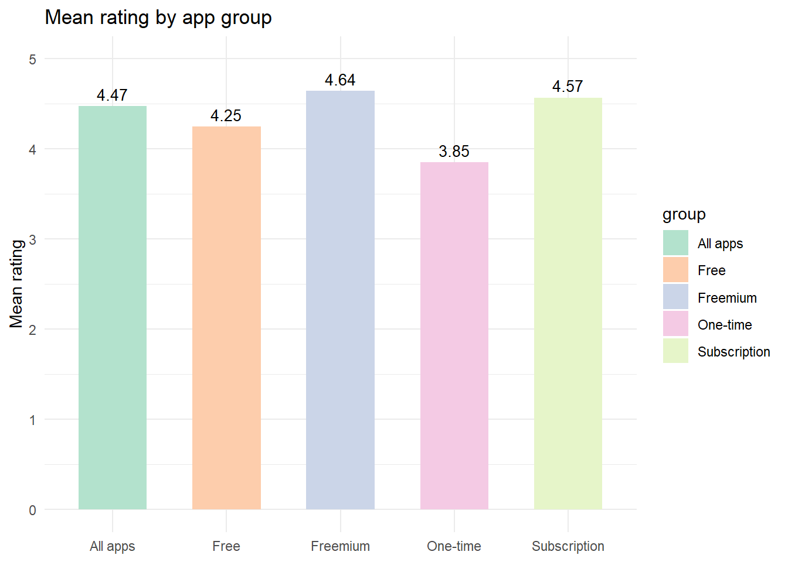
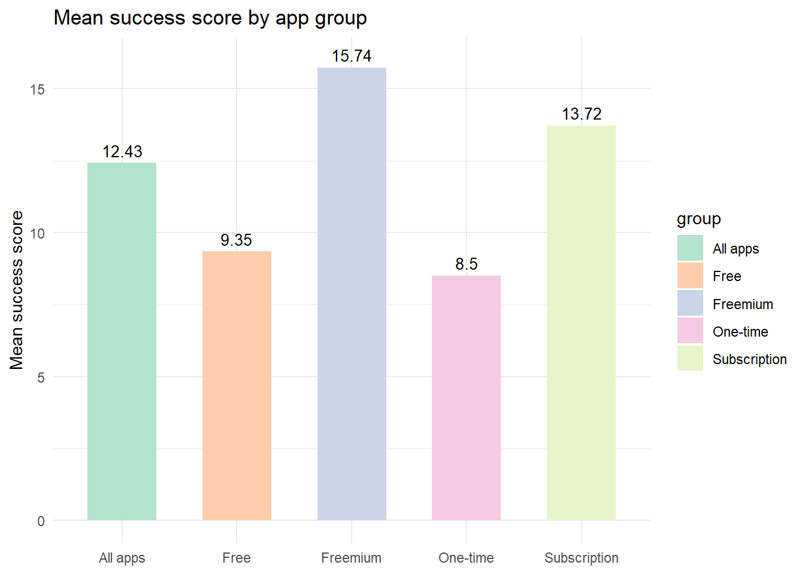
Confronting freemium with subscription apps their pricing strategy results optimal for both developers and clients. By plotting the average and median monthly price by group and rating interval we can have a closer at the pattern. Low rated freemium apps are more expensive than the rest of their competitors. Those are likely apps with a terrible free user experience and that set extremely high prices even to use basic functions. On the other end of the scale, higher rated apps are also more pricy, indicating that the increase in costs is welcomed by customers when offering a solid product. It is also worth noticing that freemium apps have higher median prices than the whole suscription category.
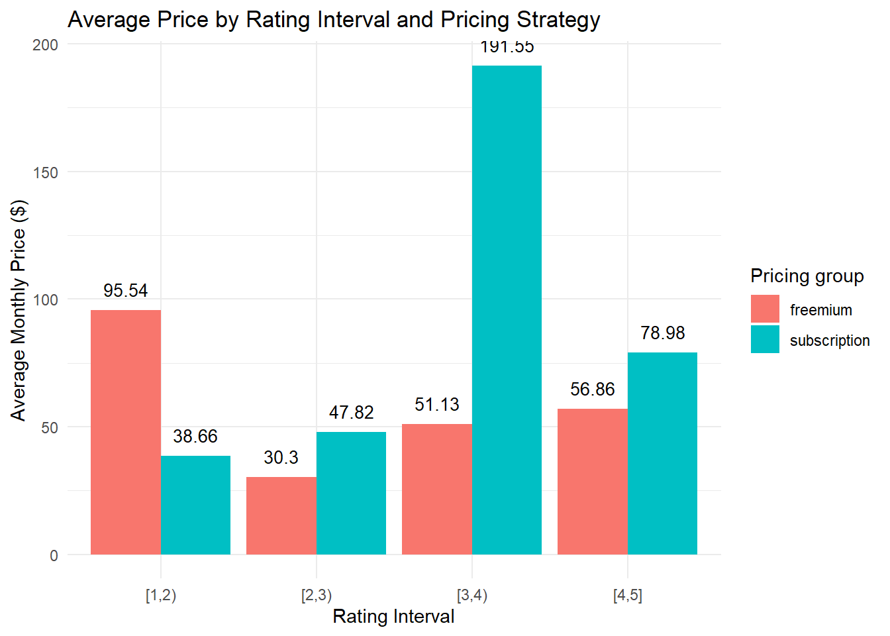
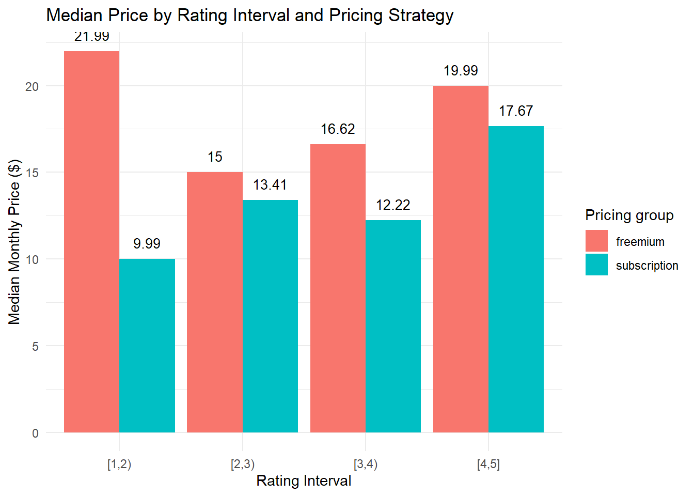
5 Determinants of App Success
I performed a regression analysis on three key variables:
- Ratings
- Popularity (number of ratings)
- Success score
to determine the drivers of app success in the Shopify App Store. In addition, to draw insights on drivers importance, I relied on machine learning, specifically onm the random forest classification method.
5.1 Model Specification
Regarding the linear regression models, I first fitted three simple OLS models and chose the best one usiung the AIC/BIC parameters. Then I used that model specification and set the macrocategories as fixed effects. I tested the model using the Wald test which confirmed the fixed effects choice.
To have a broad picture, I designed the first set of fixed effects models with the following variables:
- App group:
- Free
- One-Time
- Subscription
- Days since last update
- Response rate
- Has multiple plans (Yes or No)
- Competition category
- Number of features
Then to see how the pricing strategy influence ratings and popularity and whether freemium apps outperform paid-only I focused specifically on the subscription apps subset fitting a linear regression model with the following variables:
- Monthly price
- Number of plans
- Has free trial (Yes or No)
- Has free plan (Yes or No)
- Days since last update
- Response rate
- Competition category
- Number of features
5.2 Results
The following tables shows the results of the linear regression models:
| Ratings | Popularity | Success Score | |
|---|---|---|---|
| + p < 0.1, * p < 0.05, ** p < 0.01, *** p < 0.001 | |||
| Response Rate | -0.003*** | -0.002** | -0.012*** |
| (0.000) | (0.001) | (0.003) | |
| Number of Features | 0.146*** | 0.358*** | 1.951*** |
| (0.012) | (0.023) | (0.113) | |
| Days Since Last Update | -0.001*** | -0.004*** | -0.020*** |
| (0.000) | (0.000) | (0.001) | |
| Multiple Plans | 0.147*** | 0.522*** | 2.731*** |
| (0.026) | (0.053) | (0.255) | |
| Num.Obs. | 6648 | 6648 | 6648 |
| R2 | 0.118 | 0.231 | 0.253 |
| R2 Adj. | 0.109 | 0.223 | 0.245 |
| R2 Within | 0.087 | 0.195 | 0.216 |
| R2 Within Adj. | 0.086 | 0.194 | 0.215 |
Subscription apps performs better than free and one-time payment apps on every key metric. Similarly, frequently updating the software is associate with higher ratings and increased popularity. More specifically, 8 months without updates could lead to a decrese of 0.25 point in the app’s average rating. Offering a multiple plans also appreciated, as well as the number of features. Respose rate is, on the other hand, negatively associated with the key metrics. This parameters should be taken with caution since most developers have replied only to negative reviews in the dataset. Lastly, there is no statistically relevant diffrence across competition categories.
Results for the subscription subsets are presented in the following Table:
| Ratings | Popularity | Success Score | |
|---|---|---|---|
| + p < 0.1, * p < 0.05, ** p < 0.01, *** p < 0.001 | |||
| Response Rate | -0.003*** | -0.543* | -0.016*** |
| (0.000) | (0.260) | (0.003) | |
| Number of Features | 0.128*** | 56.773*** | 1.839*** |
| (0.012) | (11.118) | (0.127) | |
| Days Since Last Update | -0.001*** | -0.552*** | -0.020*** |
| (0.000) | (0.075) | (0.001) | |
| Has Free Trial | 0.083** | 67.579** | 2.464*** |
| (0.026) | (24.262) | (0.278) | |
| Has Free Plan | 0.062* | 96.057*** | 1.563*** |
| (0.025) | (23.761) | (0.272) | |
| Monthly Price | -0.000 | -0.019 | -0.000* |
| (0.000) | (0.019) | (0.000) | |
| Num.Obs. | 5496 | 5496 | 5496 |
| R2 | 0.107 | 0.074 | 0.269 |
| R2 Adj. | 0.095 | 0.062 | 0.259 |
| R2 Within | 0.082 | 0.041 | 0.236 |
| R2 Within Adj. | 0.080 | 0.039 | 0.235 |
The consideration made for the previous models hold also in this case for variables shared between the two. Interestingly, the monthly price doesn’t seem to impact any key metrics. On the other hand, the number of plans have a decisive positive relationship with ratings, popularity, and success score. Free trials are also associated with increase in all metrics, but with the popularity of an app in particular. An app with a free trial attracts around 68 more reviews than their competitors. Similarly, freemium apps perfom better in every aspect: they have higher ratings and success score, but also 96 more reviews, and thus more downloads, on average.
Lastly, I performed a random forest classification to understand which characteristics contribute the most to ratings. Results as shown below:
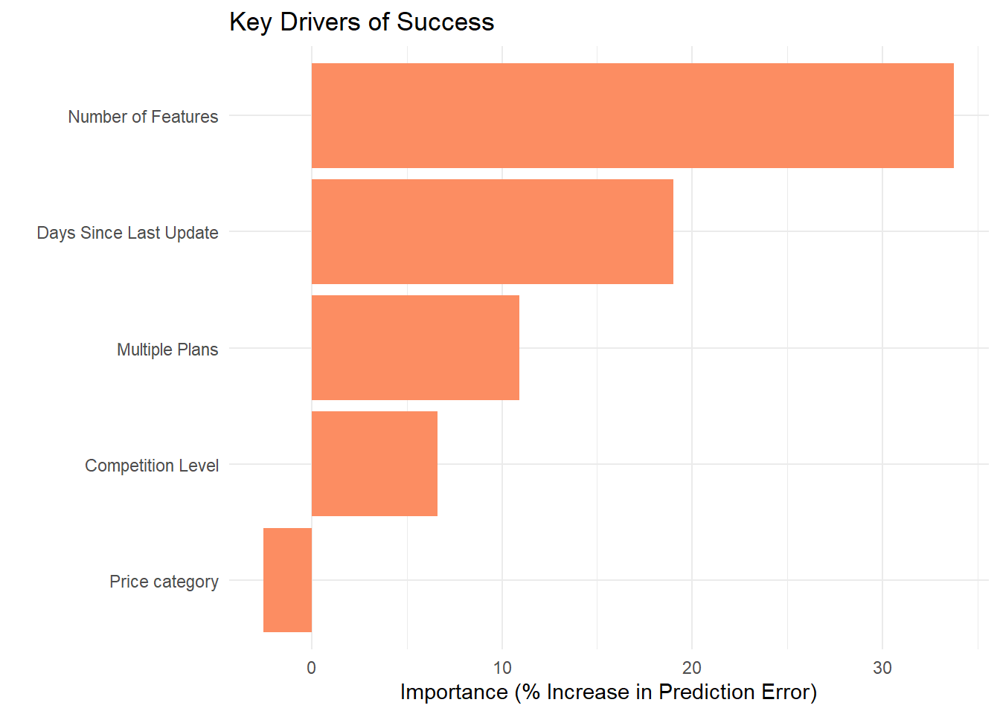
The top drivers of ratings are:
- Number of features
- Days since last update
- Having multiple plans
6 Managerial Implications
The findings of this study provide several actionable insights for developers and product managers operating in the Shopify App Store ecosystem.
First, pricing strategy plays a crucial role in determining app performance. The analysis shows that subscription-based apps, particularly those adopting a freemium model, tend to achieve higher popularity and success scores compared to both free and one-time payment apps. Offering a free plan or trial lowers the barrier to adoption, allowing merchants to experiment with the product before committing financially
TipPricing strategy
Implementing a freemium entry point can be an effective acquisition strategy that supports long-term monetization through premium upgrades
Second, continuous product development is essential for maintaining high ratings and engagement. Apps that are updated more frequently signal reliability, responsiveness, and ongoing innovation to users.
TipFor developers
Frequently update software is a strategic tool for maintining user satisfaction and marketplace visibility
Third, feature richness significantly contributes to app success. Apps offering a larger number of functionalities tend to perform better across all key metrics. This suggests that merchants value comprehensive solutions that solve multiple problems within a single application.
TipFor developers
Investing in the expansion of core features or integrating complementary functionalities from competitors may increase perceived value and improve adoption rates.
Fourth, offering multiple pricing plans appears to be beneficial. Apps with more than one pricing tier show higher ratings and popularity levels. Tiered pricing structures allow developers to serve heterogeneous customer segments, ranging from small merchants with limited needs to larger businesses requiring advanced capabilities.
Overall, successful apps in the Shopify ecosystem appear to combine accessible entry pricing, continuous improvement, feature-rich design, and flexible pricing structures.
CautionCaution: Response Rate
Developers tend to respond primarily to negative reviews rather than positive ones. Therefore, response rate should not be interpreted as a direct indicator of customer support quality without considering the context of the interactions
7 Conclusion
This study investigates the key factors driving success in the Shopify App Store by combining marketplace analysis, pricing strategy evaluation, and econometric modeling. Using a dataset of more than 11,000 applications, the research explores how pricing structures, developer behavior, feature availability, and competitive conditions influence ratings, popularity, and an overall success score.
The empirical results highlight several consistent patterns. Subscription-based apps outperform free and one-time payment apps across the main success metrics, with freemium models demonstrating a particularly strong advantage. Product-related characteristics also play an important role: apps with more features, multiple pricing plans, and frequent software updates tend to achieve higher ratings and attract more users.
In contrast, the effect of developer response behavior appears ambiguous, likely due to the nature of review interactions in the dataset. Similarly, the role of market competition remains difficult to isolate due to the synthetic construction of macro-categories used to measure competitive intensity.
Despite these limitations, the analysis provides a clearer understanding of how product design, pricing strategies, and development practices interact to influence app performance in digital marketplaces. For developers entering the Shopify ecosystem, the results suggest that long-term success depends not only on the initial product idea but also on sustained product improvement, thoughtful pricing design, and the ability to deliver comprehensive functionality to merchants.
Future research could extend this work by incorporating download data, revenue estimates, or longitudinal observations to better capture growth dynamics and causal relationships over time. Nevertheless, the findings presented here offer a practical framework for understanding success factors in SaaS marketplaces and contribute to the broader study of platform-based digital ecosystems.